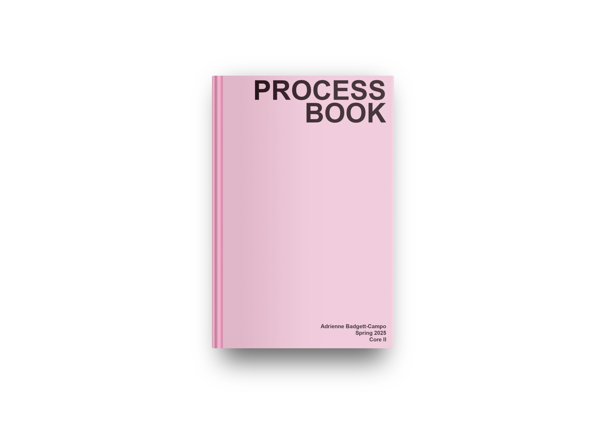
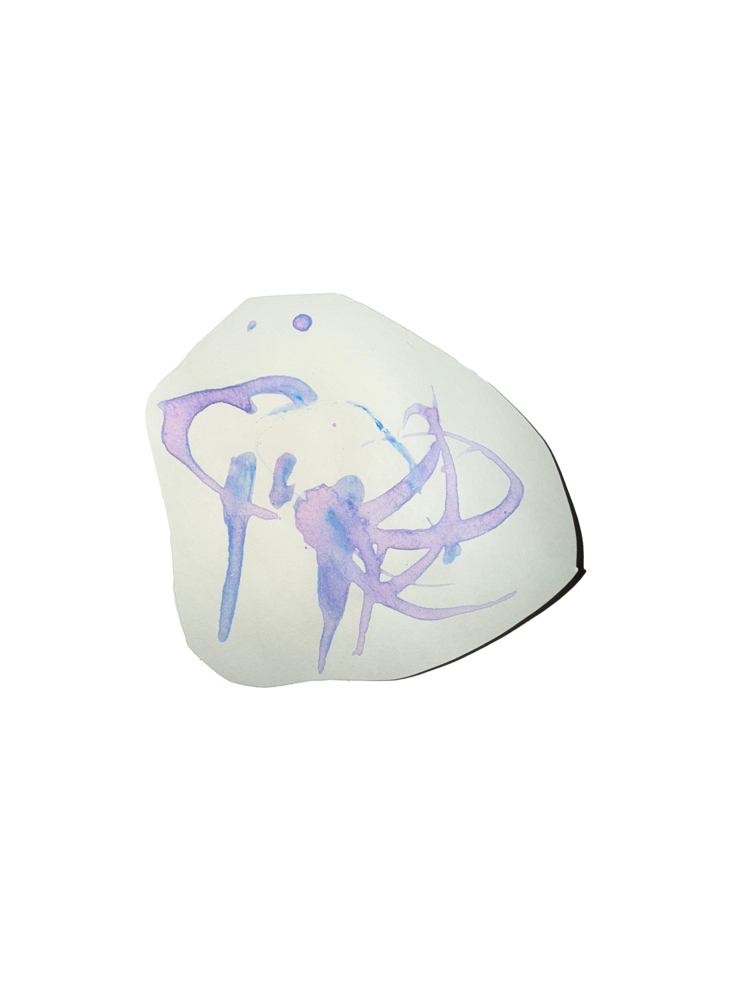
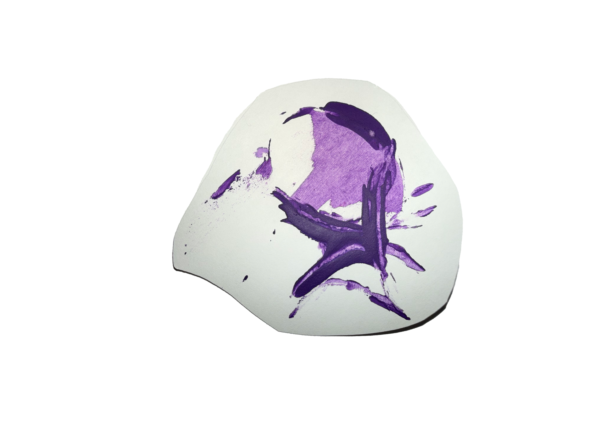
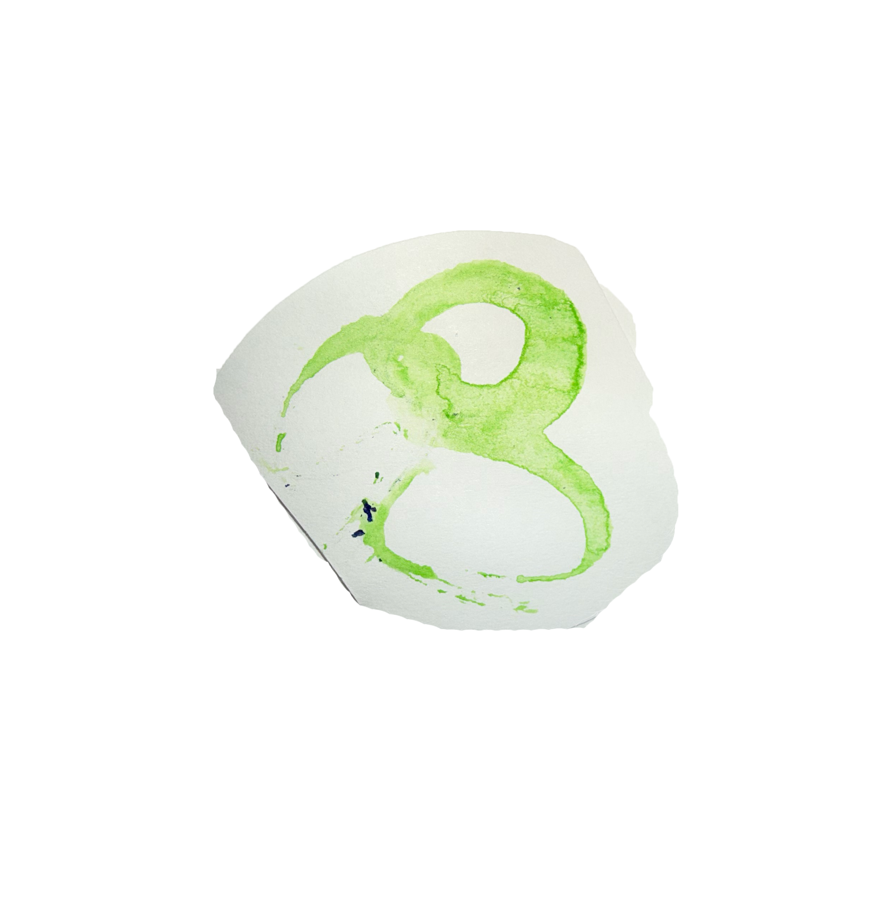
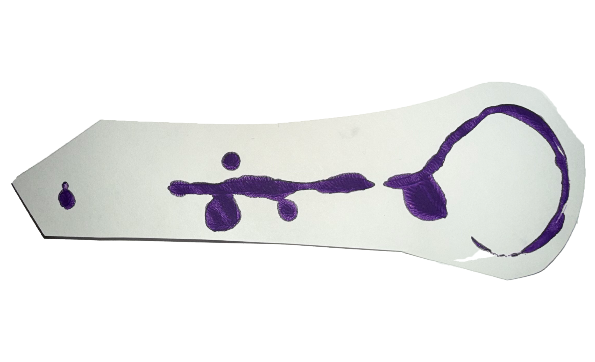

Making Marks
A markmaking process book exploring scale, repetition, and experimentation through a series of structured prompts and material studies.

Concept
This project explores markmaking as a process of experimentation, repetition, and transformation through a series of structured assignments. Using a designated object as the primary tool, each stage required the creation of a specific number of individual and distinct marks while introducing new constraints and parameters.
The process began with an open exploration, producing one hundred marks using the object in any way I chose. From there, the project expanded in both scale and complexity. One stage challenged me to create marks larger than my body, shifting the work from small, controlled gestures to full-body movement. Another required altering the object itself, resulting in a new set of marks that explored texture and variation.
Additional iterations introduced unpredictability and authorship through a chance-based system and a self-directed prompt, each generating another series of marks. Together, these exercises pushed me to experiment with materials, reconsider the role of the tool, and explore the possibilities of markmaking across different scales and approaches.
Process
The project developed through a series of structured experiments using the assigned object as a markmaking tool. Each stage introduced new constraints that encouraged different types of movement and interaction with the material. By repeating the act of markmaking many times, small variations in pressure, speed, and direction began to produce a wide range of visual results.
After altering the object, the second phase generated a much larger set of marks that expanded the range of textures and forms that could be created. The final stage pushed the scale further by producing marks longer than the length of my body, shifting the process from small gestures to full-body movement. This change in scale emphasized the relationship between physical motion and the marks left behind.
All of these experiments were documented and organized into a process book that traces the progression of the project from the earliest mark studies to the final large-scale compositions.






Flip Through the Book
View the full publication below.